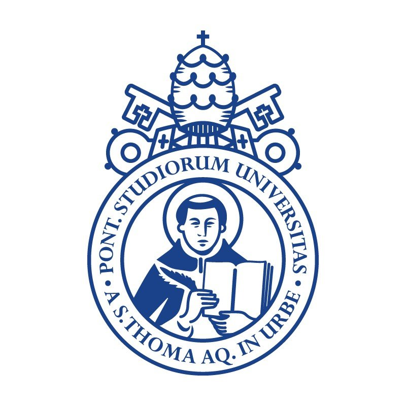
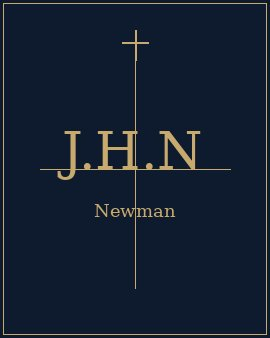
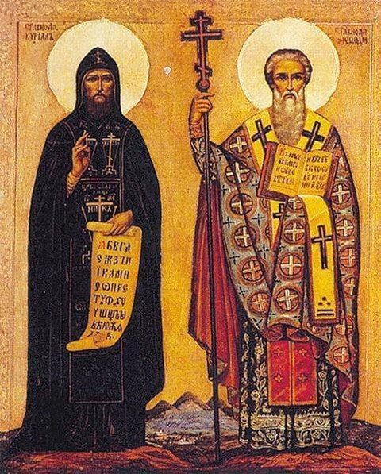
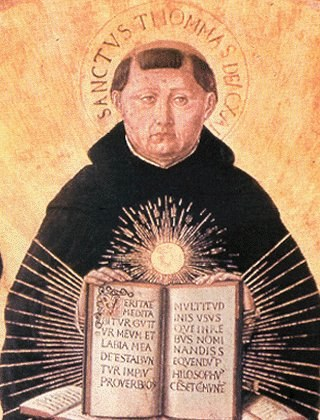

Likoudis Legacy
Foundation
Advancing Ecumenical Scholarship & Christian Unity
In Illo Uno Unum — In the One, we are one.
Advancing Ecumenical Scholarship & Christian Unity
In Illo Uno Unum — In the One, we are one.
The Likoudis Legacy Foundation is a 501(c)(3) research institute dedicated to ecumenical scholarship, Catholic formation, and the intellectual legacy of James Likoudis — theologian, apologist, and lay Catholic who gave more than seventy years to the reunion of East and West.
The Foundation advances that project through publication, education, and direct service to dioceses and the wider Church — operating from the conviction that the via media is harder to hold than its alternatives, and therefore more worth holding.
I.
From the Church's center outward — inter-Catholic unity as the precondition for credible Christian reunion, and Christian reunion as the precondition for genuine interreligious dialogue. Catholic-Orthodox relations are our primary focus, extending to the wider interreligious horizon Vatican II opened.
II.
The Church has spoken clearly on the death penalty, immigration, labor, and the dignity of every person — and on the irreducible right of religious liberty. The Foundation supports the formation needed to receive that teaching in full, without partisan filtering from left or right.
III.
Serving both pew and chancery: lay formation through our reading programs, publications, and initiatives; and direct support to dioceses through canonical resources, consulting, and conference programming.
A journal of Catholic theology, ecumenism, and patristics — named for the Byzantine philosopher Demetrios Kydones.
JournalA digital commons for Catholic scholarship, dialogue, and community — connecting the faithful across traditions.
Digital PlatformA Foundation initiative addressing the purpose crisis among young adults — integrating faith, meaning, and vocation.
InitiativeA Substack publication offering daily roundups, analysis, and commentary on the Church's living tradition and reform.
Publication In Memory of James Likoudis
In Memory of James Likoudis
A scholarly tribute published in the peer-reviewed journal of the Society of Catholic Social Scientists, recognizing Likoudis's decades of apologetic, ecumenical, and catechetical work and his witness to the integrity of Catholic doctrine.
Read in CSSR Vol. 30 (2025) →Andrew Likoudis's one-year tribute — written on the anniversary of his grandfather's passing.
Read the anniversary tribute → New York Times
New York Times Nat'l Catholic Register
Nat'l Catholic Register EWTN
EWTN Catholic Answers
Catholic Answers Where Peter Is
Where Peter Is Catholic Culture
Catholic Culture Patheos
Patheos Catholic Exchange
Catholic Exchange Aleteia
Aleteia Crisis Magazine
Crisis Magazine Hom. & Pastoral Review
Hom. & Pastoral Review New Oxford Review
New Oxford Review Catholic World News
Catholic World News Human Life Review
Human Life Review The Wanderer
The WandererFrom Oxford to the Library of Congress, James Likoudis' works sit where scholars look first.
 Oxford
Oxford Harvard
Harvard Princeton
Princeton Johns Hopkins
Johns Hopkins Columbia
Columbia Notre Dame
Notre Dame Univ. of Chicago
Univ. of Chicago British Library
British Library CUA
CUA Georgetown
Georgetown Library of Congress
Library of Congress Franciscan University
Franciscan University
Pontifical U. of St. Thomas Aquinas
Mary,
Mother of God

St. Joseph

St. Leopold
Mandić

St. Thérèse
of Lisieux

St. John Henry
Newman

Sts. Cyril &
Methodius

St. Thomas
Aquinas
St. Teresa Benedicta
of the Cross
By supporting the Likoudis Legacy Foundation, you honor James Likoudis' legacy and contribute to meaningful change — in ecumenical dialogue, theological scholarship, and the defense of religious liberty worldwide.
Make a Gift TodayScholarship, events, and fellows updates — delivered one to two times per month. No noise, no filler.
Enter your email to subscribe
No spam. Unsubscribe anytime.